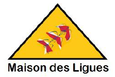

À Propos
Actuellement en deuxième année de BTS SIO au Lycée Suzanne Valadon à Limoges, je me passionne pour l'informatique et les Systèmes réseaux. J'ai obtenu mon Baccalauréat général avec les spécialités NSI et SES.
Le BTS SIO en deux options
Le BTS Services Informatiques aux Organisations propose deux spécialités :
Expériences Professionnelles
Technicien Système & Réseau Stage
CCI de l'Indre
24 Place Gambetta, 36000 Châteauroux
Établissement public accompagnant les entreprises et le développement économique local.
Site webStage de première année axé sur la refonte complète d'infrastructure et le support utilisateur.
- Infrastructure Serveur : Remise en service complète d'une baie informatique (Serveurs Dell PowerEdge, Switchs, Onduleur, KVM).
- Virtualisation : Installation et configuration d'hyperviseurs VMware ESXi sur serveurs physiques.
- Réseau & Câblage : Câblage complet de salles de formation (remplacement CAT5 par CAT6), brassage de baie et installation de téléphones IP (PoE).
- Déploiement : Masterisation et déploiement de 15 postes sous Windows 11, mise à jour BIOS et extension mémoire RAM.
Technicien Système & Réseau Stage
Naval Group
Ruelle-sur-Touvre (16)
Leader européen du naval de défense — conception et maintenance de sous-marins et navires de combat.
Site webStage de deuxième année de BTS SIO au sein de la Direction des Systèmes d'Information, dans un environnement industriel hautement sécurisé.
- Administration système : Gestion et supervision du parc de serveurs Windows Server dans un environnement Active Directory multi-sites.
- Sécurité réseau : Participation à l'audit et à la mise à jour des règles de pare-feu, application des politiques de sécurité internes.
- Documentation : Rédaction de procédures techniques et mise à jour de la documentation d'infrastructure.
Au vu de l'entreprise et des tâches que j'ai effectuées pendant mon stage, je n'ai pas le droit de diffuser mon rapport de stage
Compétences Techniques
Technologies maîtrisées et outils utilisés durant mon parcours.
Systèmes & Réseaux
Développement Web
Épreuves E5
Mes Projets
Voici les projets principaux réalisés durant ma formation SISR.

Projet M2L
Maison des Ligues
Évolution et sécurisation du réseau d'une entreprise de coworking multisite. Mise en œuvre d'une architecture sécurisée (DMZ, VLANs) avec pares-feux Stormshield et déploiement des services réseau critiques sous Debian (DNS, DHCP, Web).
{kind=link}
Projet CUB
Infrastructure Multisite & Sécurité
Sécurisation et interconnexion du réseau de CUB, une entreprise d'incubation de startups et de coworking. Architecture multisite (Siège/Agences) avec segmentation (DMZ, VLANs) via des pares-feux Stormshield et administration des services réseaux sous Debian.
{kind=link}
{kind=link}
Veille Technologique
🎯 Objectifs de ma Veille
- Maintenir mes compétences à jour : Rester au courant des dernières tendances, failles de sécurité, et bonnes pratiques.
- Explorer de nouvelles technologies : Identifier les outils émergents qui pourraient optimiser les infrastructures (ex: solutions Cloud).
- Préparer mon avenir professionnel : Cerner les besoins du marché de l'emploi dans le domaine SISR.
Thématique : Le Green IT & les Infrastructures
Problématique : Quelles sont les solutions techniques pour réduire l'empreinte environnementale (eau et électricité) des Data Centers ?
Ma veille porte sur l'évolution des technologies de refroidissement visant à limiter la consommation énergétique et le gaspillage d'eau face à la densification des serveurs (notamment avec l'arrivée de l'IA).
Réduire la consommation d'eau des systèmes de refroidissement
Cet article détaille les techniques (urbanisation des salles, immersion cooling) pour diminuer la dépendance à l'eau potable dans les infrastructures.
Lire l'articleSchneider standardise le refroidissement liquide
Faire circuler du liquide au plus près des composants devient obligatoire pour refroidir les calculs intensifs.
Lire l'articleData centers et eau : tout ce qu'il faut savoir
Analyse sur l'importance de réutiliser l'eau en circuit fermé (osmose inverse) pour éviter l'entartrage et la corrosion des systèmes de refroidissement.
Lire l'articleMes Sources & Outils de Veille
Documentation Technique
Retrouvez ici l'ensemble de mes procédures système et réseau faites en stage et au cours des 2 ans de formation.
Stage
Rapport de stage et missions professionnelles à la CCI de l'Indre.
Accéder aux documents
CCI de l'Indre
Procédures Système
Installation de services, configuration de serveurs Web et administration Linux/Windows Server.
Accéder aux documents
1ère Année
2ème Année
Configurations Cisco
Recueil de TP d'administration réseau : du switching de base au routage dynamique avancé.
Accéder aux documents
1ère Année
2ème Année
Mon Curriculum Vitae
Vous pouvez consulter mon CV ci-dessous ou le télécharger au format PDF.
Me Contacter
Vous pouvez me joindre via les informations ci-dessous.